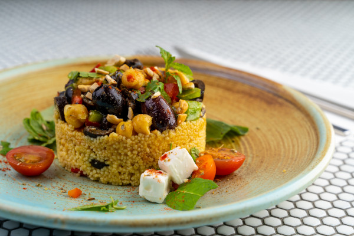

Cuscuz Nordestino

- 1/2 packet of corn flakes flour
- 1 pinch of salt
- 50 g of grated coconut
- 1/2 cup of water
- 1/2 cup coconut milk
Preparation
- Mix all dry ingredients in a container.
- Add the water and coconut milk little by little, until it forms a very wet crumb.
- Let it rest for 5 minutes.
- Place in the couscous without kneading.
- Cook for 15 minutes.
- Serve hot with curd cheese or sliced mozzarella cheese.